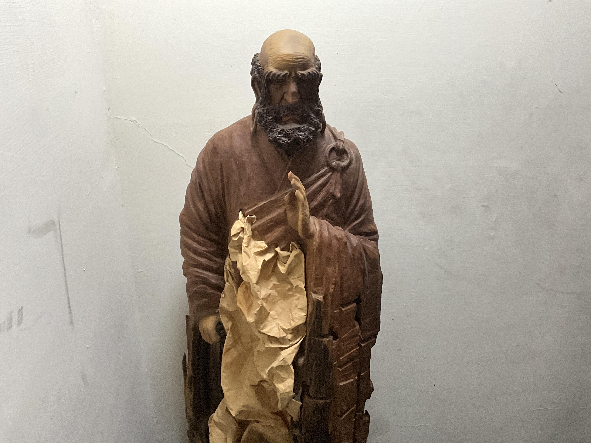

達摩祖師，又稱菩提達摩，南北朝時自南印度泛海東渡中國，為中國禪宗的開創者，世尊「東土第一代祖師」。
相傳他本是南天竺香至國的三王子，捨王族尊榮而入佛門，師承禪宗二十七祖般若多羅，承嗣衣缽，成為印度禪宗第二十八祖。遵師遺命，他渡海來到中土，將「直指人心、見性成佛」的禪法傳入東方。
不立文字、教外別傳之旨，自此融會中華文化，孕育出獨樹一格的中國禪，並輾轉東傳朝鮮、日本，影響後世千餘年。
香至國王子，捨尊榮入佛門，依般若多羅尊者得承禪宗二十八祖之位。
南印度遵師付囑，乘船歷三年航程，自海路抵中國南方，弘法之願由此啟程。
泛海三載武帝問造寺寫經有何功德，達摩答「並無功德」，道破著相之非，因緣未契遂北上。
金陵・梁武帝北行至嵩山少林，於石洞面壁靜坐九年，世稱「壁觀婆羅門」。
嵩山・少林慧可立雪斷臂以明志，達摩授以衣缽與《楞伽經》，成東土二祖，法脈遂續。
傳法・慧可離金陵北上，折一蘆葦置於江面，腳踏其上渡過長江，化作禪門最飄逸的身影。
於少林石洞靜坐觀心九載，相傳身影映入石壁，留下「面壁石」之傳說。
慧可冒大雪佇立、自斷一臂以表求道之誠，終得達摩印可，傳為禪林佳話。
示寂後有人於蔥嶺見其提一草鞋西行；開棺視之，棺中果僅餘一履。
真理不囿於語言，貴在親證。
經教之外，以心傳心。
直探本心，不假外求。
徹見自性，當下即佛。